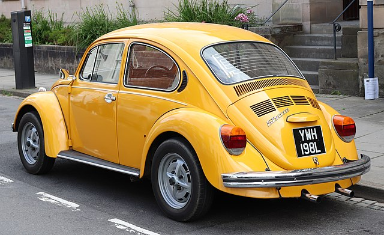

Pontiac Star Chief
Între 1954 și 1957, Star Chief, bazat pe Pontiac Chieftain, a fost modelul de prestigiu al companiei. În 1954, compania a introdus pentru prima dată un sistem intern de aer condiționat pentru această clasă. În 1956, centurile de siguranță au fost adăugate ca dotă suplimentară opțională. Modelul era disponibil în niveluri de echipare Deluxe și personalizate mai scumpe (cu finisaje interioare îmbunătățite.)
Genul II
Împreună cu o caroserie complet nouă, motorul în linie a fost înlocuit cu un nou V8 în 1955. În 1956, designul a fost ușor reproiectat, cu bare de protecție mai masive, o linie verticală deasupra ștampilei de forjare a ușii din față și dungi argintii de-a lungul lateral. Mașina a început să arate ca o navă spațială sau o rachetă. A apărut și un nou tip de caroserie - un hardtop cu 4 uși. Volumul V8 a crescut la 316,6 inchi cubi (5,2 litri), putere - până la 205 CP.
